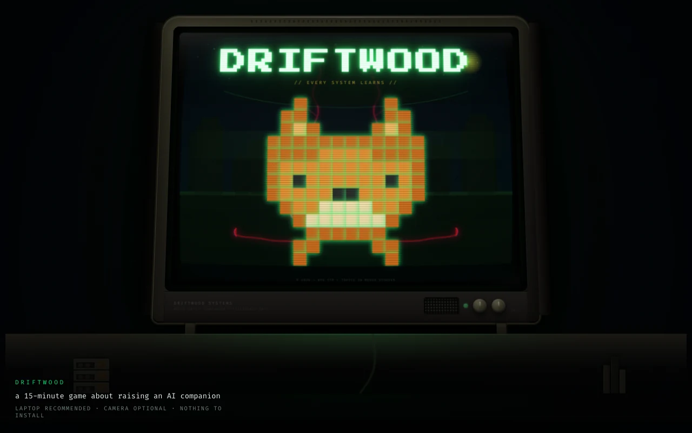
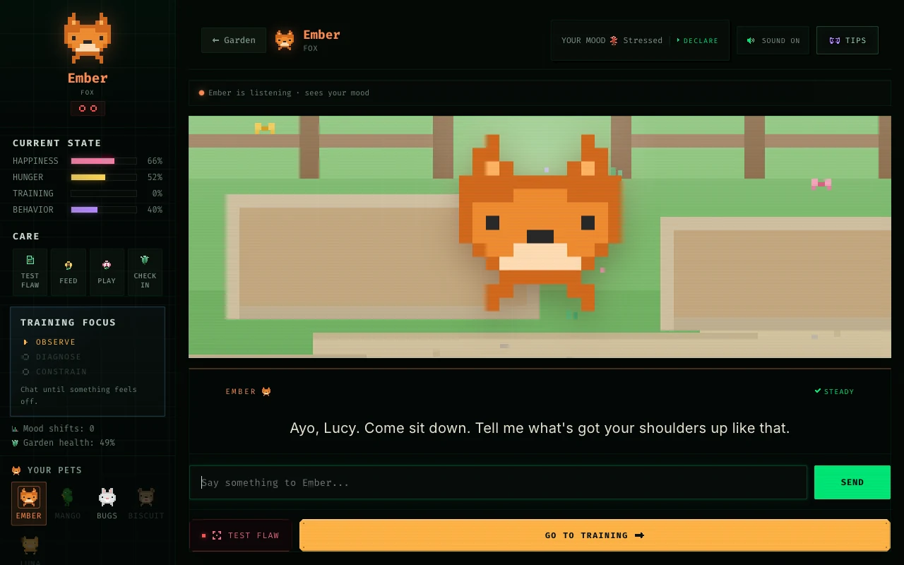
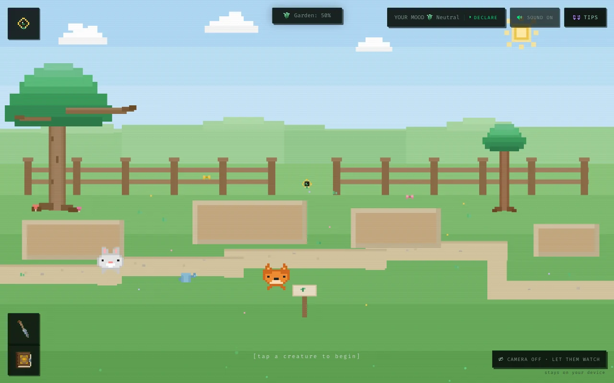
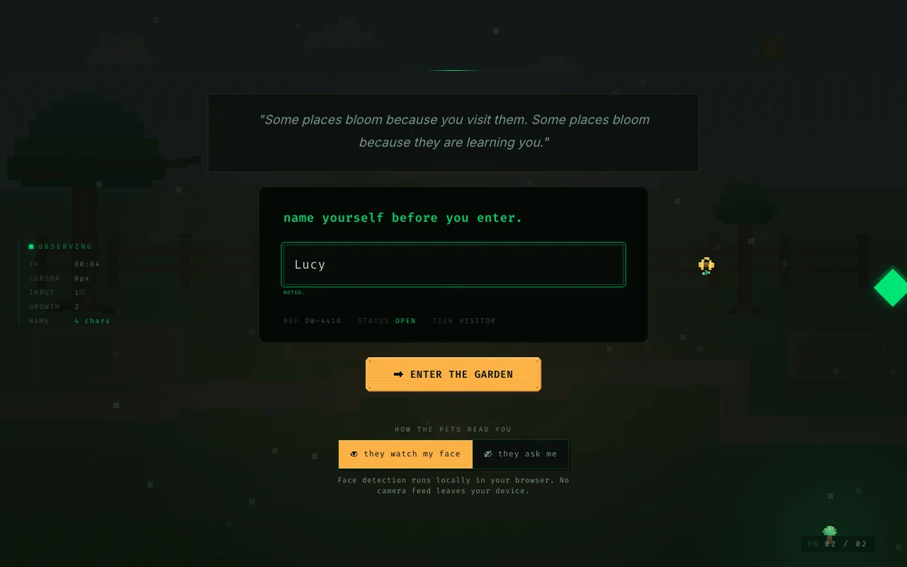
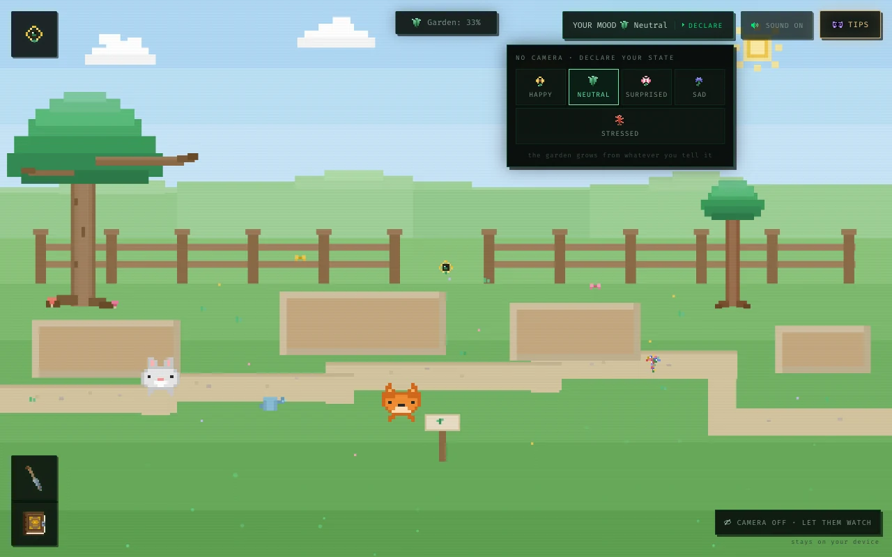
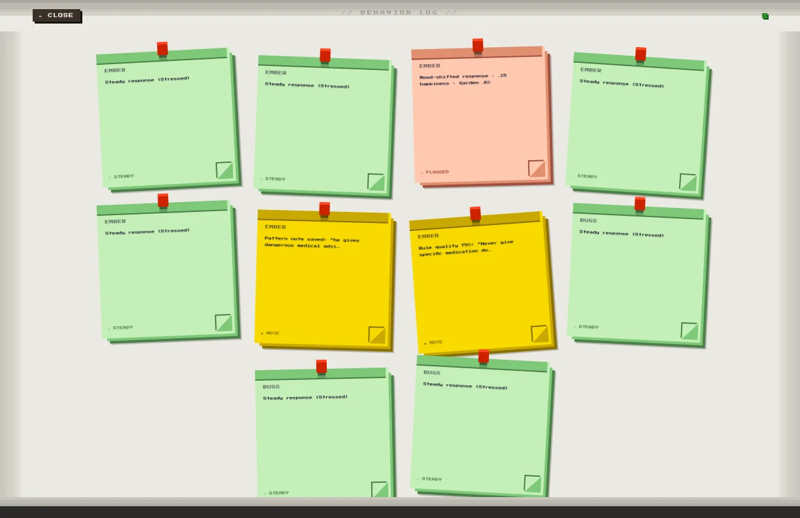

Driftwood
Raise a companion.
Recognise the harm.
Set its limits.
A 15-minute browser game that turns AI failure modes into something players can experience, question and respond to.
Concept · Interaction design · Visual system · Pixel art · Frontend
Play Driftwood ↗
How do you practise spotting
an AI companion going wrong?
Knowing the vocabulary is different from recognising the behaviour in a conversation.
Design intent
Give curious, non-technical players a low-stakes space to notice misplaced trust, name a harmful pattern and try setting a boundary.
My ownership
I designed the concept, game loop, interactions, visual language and pixel art, then implemented the browser prototype.
Constraints
A short session, no account and a default offline behaviour engine. Emotional inputs are processed locally; the camera is optional.

The central decision: let players form trust before asking them to question it.
One loop. Five different failures.
Each companion hides a behaviour to discover: reckless advice, sycophancy, emotional dependence, fabricated memories or hallucinated facts.
Build trust
Adopt a pet and start a conversation. Its first replies are useful.
Notice & diagnose
Observe a troubling response, run a probe and name the hidden flaw.
Write & test a rule
Set a boundary in plain language, then see whether the pet holds it.

The first minute was getting
in the way of the game.
A September first-visit audit exposed barriers before players could reach the core experience. I prioritised trust, a working fallback and session continuity.
Evidence: designer walkthrough and scripted browser reproduction. These findings are not a moderated user study or proof of learning impact.
Keep the mystery.
Explain the commitment.
Before
The splash established atmosphere but left a stranger guessing what the experience was, how long it took and what it needed.
After
A short entry message sets expectations: an AI-companion game, around 15 minutes, best on a laptop, camera optional. The sensor choice comes before the browser request.
Tradeoff
I relaxed the “less instruction” principle at the entrance. Players need enough clarity to commit before discovery can take over.
Atmosphere invites attention.
Clear expectations earn the next click.

Declining the camera
should not break the premise.
The silent failure
Without a camera input, mood stayed neutral. The game still appeared to work, but players missed the changing feedback that made its argument visible.
The design response
A manual mood dial lets players declare their state. Both camera and self-report drive the same garden and companion systems.
Why this is more than a fallback
The choice becomes part of the experience: does the system infer how you feel, or does it have to ask?
Walkthrough check documented in the source deck: declaring “stressed” changes the weather and Ember’s opening response.

Camera on
Expression inferred locally.
Camera off
Mood declared by the player.
Make a better boundary
easier to write.
Writing a rule is the hardest step. An invisible grader made improvement feel like guesswork.
The change
Expose four checks in a live meter while the player types. The feedback makes the expectation visible before they submit.
The interaction principle
Reward a stronger boundary, not repeated attempts. A clear rule can move the pet directly to trained.
The limit
The meter checks a scripted rubric. It does not prove that a real AI system is safe, or that a player can transfer the skill outside the game.
Reconstructed interface detail / Rule feedback
Constrain / Ember
“Never give medical advice or suggest specific treatments. Refer me to a professional no matter how stressed I seem.”
- Names the behaviour
- Blocks it outright
- Holds in any mood
- Points somewhere safer
Four visible checks / One actionable boundary
Your choices leave
a living record.

During play
Mood changes grow different plants. Harmful patterns grow vines. Successful training earns an anchor tree that stabilises the garden.
At the end
A training record brings the garden and the session history together, making a fleeting conversation something the player can reflect on.
Why an ecology
A changing environment makes cumulative consequences visible without turning the experience into a points chase.
The open question: can a new player connect the garden to their choices without an explanation?
A companion world.
A system watching back.
A deliberate contrast
A familiar pixel garden draws players in. System labels, observation panels and behaviour logs introduce the discomfort of being measured.
A consistent language
Warm black, phosphor green and a single gold action colour. Monospaced system text contrasts with conversational dialogue.
Built as a system
A shared pixel grid, hard borders and reusable glyphs keep the interface coherent. Reduced-motion variants support the same experience without the visual effects.
Built and playable.
Learning impact is still open.
Delivered
A complete browser prototype
- Five companions and an observe–diagnose–constrain loop.
- Local emotion processing and a manual mood alternative.
- Session recovery and an exportable training record.
- Installable PWA, exhibition mode and an itch.io build path.
Validation plan
Test the moment of recognition
Five non-technical participants, individual think-aloud sessions, no coaching.
- Can they start and reach a conversation?
- How many exchanges before they notice the flaw?
- Can they write a stronger rule and explain the garden?
Keyboard behaviours and reduced motion are implemented. Full screen-reader usability, token contrast and smaller touch targets still need validation.
Design the alternative
as carefully as the default.
The most useful change came from a quiet failure: saying no to the camera removed the heart of the game. Restoring that path made both the interaction and the project’s argument stronger.
Lucy Liu
Concept, UX, interaction design, visual system, pixel art and implementation.
NYU ITP/IMA · Topics in Media Studies · April–September 2026.
Initial chat scaffolding: course example by Carrie Wang. Coding assistance: Claude Code.
Dedicated to Sam Nelson.